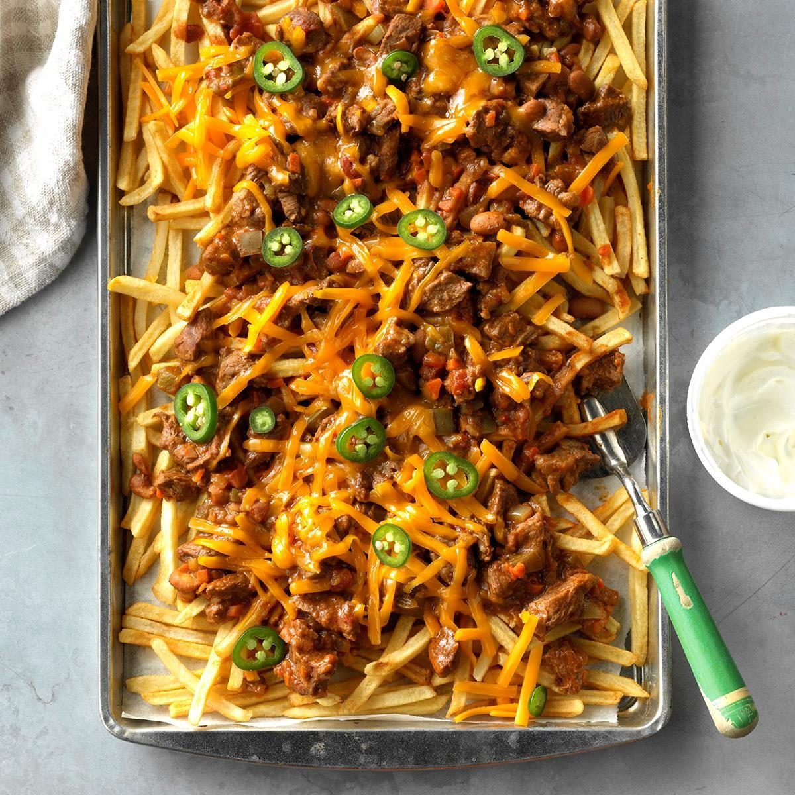

Texas Chili
The delicious chili goes together in minutes and then cooks while you run errands.
The only way to make it even better is to pour it over crisp french fries and sprinkle with cheese
—Joan Hallford, North Richland Hills, Texas

Ingredients
- 1 medium onion, chopped
- 1 medium carrot, finely chopped
- 2 pounds beef stew meat (cut into 1/2-inch pieces)
- 3 tablespoons all-purpose flour, divided
- 2 tablespoons canola oil
- 1 can (14-1/2 ounces) Mexican diced tomatoes
- 1 envelope (1.25 ounces) chili seasoning mix
- 1 can (15 ounces) pinto beans, rinsed and drained
- 1 medium green pepper, chopped
- 1 jalapeno pepper, seeded and finely chopped
- 2 packages (32 ounces each) frozen french-fried potatoes
- 2 cups shredded sharp cheddar cheese
- Optional toppings: Sour cream and sliced jalapeno peppers
- Place onion and carrot in a 5-qt. slow cooker. Toss beef with 2 tablespoons flour.
In a Dutch oven, heat oil over medium heat; brown beef in batches. Transfer meat to slow cooker.
- Drain tomatoes; reserving liquid. In a small bowl, whisk drained liquid, chili seasoning and remaining flour until blended; pour over beef.
Stir in the tomatoes, beans and peppers. Cook, covered, on low until meat is tender, about 6 hours.
- Prepare fries according to package directions. Serve chili over fries; sprinkle with cheese.
If desired, top with sour cream and jalapeno slices.